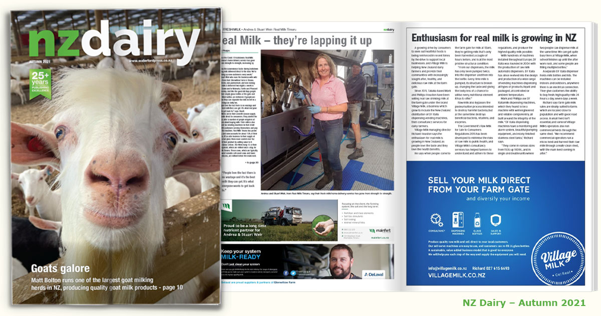
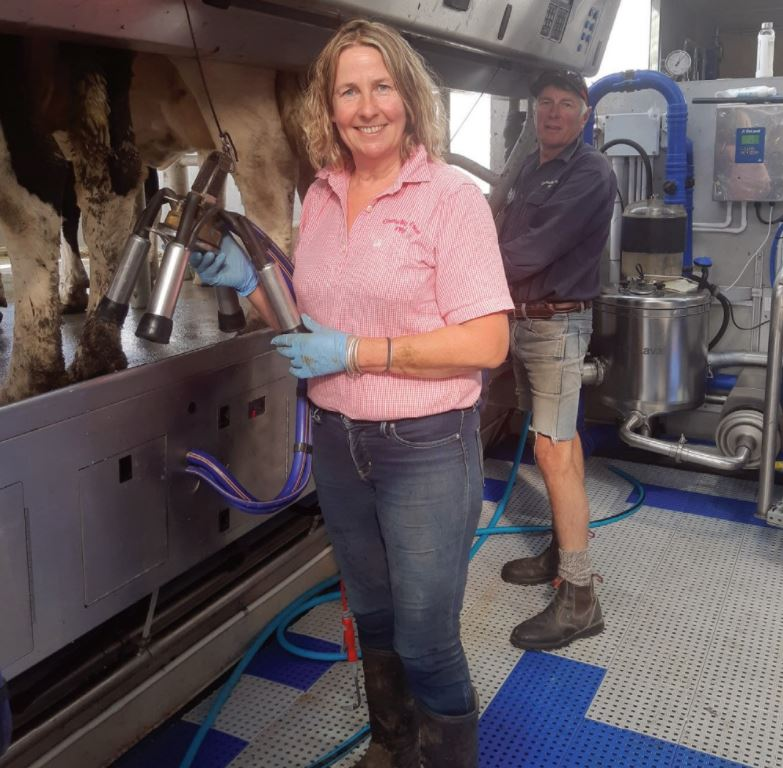
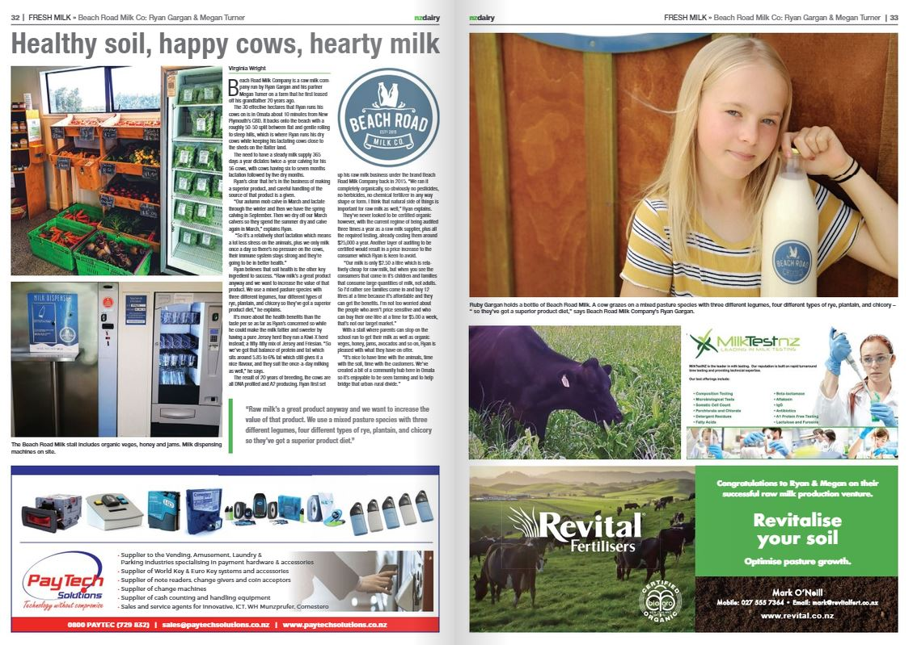

Enthusiasm for real milk is growing in NZ
NZ Dairy Autumn 2021 covered the rising interest in local, minimally processed food and Village Milk's role helping farmers provide fresh raw milk at the farm gate.
News and media
Coverage of farm gate milk, raw milk dispensers and the farmers building direct-to-customer milk businesses.

NZ Dairy Autumn 2021 covered the rising interest in local, minimally processed food and Village Milk's role helping farmers provide fresh raw milk at the farm gate.

Andrea and Stuart Weir from Real Milk Timaru saw home delivery grow after lockdowns, while continuing to sell through vending machines in their retail shop.

Beach Road Milk Company in Omata focuses on soil health, careful cow management and a direct community hub built around raw milk.